Mapping
Jens Daniel Müller
11 August, 2020
Last updated: 2020-08-11
Checks: 7 0
Knit directory: Cant_eMLR/
This reproducible R Markdown analysis was created with workflowr (version 1.6.2). The Checks tab describes the reproducibility checks that were applied when the results were created. The Past versions tab lists the development history.
Great! Since the R Markdown file has been committed to the Git repository, you know the exact version of the code that produced these results.
Great job! The global environment was empty. Objects defined in the global environment can affect the analysis in your R Markdown file in unknown ways. For reproduciblity it’s best to always run the code in an empty environment.
The command set.seed(20200707) was run prior to running the code in the R Markdown file. Setting a seed ensures that any results that rely on randomness, e.g. subsampling or permutations, are reproducible.
Great job! Recording the operating system, R version, and package versions is critical for reproducibility.
Nice! There were no cached chunks for this analysis, so you can be confident that you successfully produced the results during this run.
Great job! Using relative paths to the files within your workflowr project makes it easier to run your code on other machines.
Great! You are using Git for version control. Tracking code development and connecting the code version to the results is critical for reproducibility.
The results in this page were generated with repository version 39d06f0. See the Past versions tab to see a history of the changes made to the R Markdown and HTML files.
Note that you need to be careful to ensure that all relevant files for the analysis have been committed to Git prior to generating the results (you can use wflow_publish or wflow_git_commit). workflowr only checks the R Markdown file, but you know if there are other scripts or data files that it depends on. Below is the status of the Git repository when the results were generated:
Ignored files:
Ignored: .Rproj.user/
Ignored: data/GLODAPv1_1/
Ignored: data/GLODAPv2_2016b_MappedClimatologies/
Ignored: data/GLODAPv2_2020/
Ignored: data/Gruber_2019/
Ignored: data/WOCE/
Ignored: data/World_Ocean_Atlas_2018/
Ignored: data/dclement/
Ignored: data/eMLR/
Ignored: data/pCO2_atmosphere/
Ignored: data/parameters/
Ignored: dump/
Untracked files:
Untracked: analysis/python_scripts/
Untracked: analysis/test_scripts/
Unstaged changes:
Modified: analysis/_site.yml
Note that any generated files, e.g. HTML, png, CSS, etc., are not included in this status report because it is ok for generated content to have uncommitted changes.
These are the previous versions of the repository in which changes were made to the R Markdown (analysis/mapping.Rmd) and HTML (docs/mapping.html) files. If you’ve configured a remote Git repository (see ?wflow_git_remote), click on the hyperlinks in the table below to view the files as they were in that past version.
| File | Version | Author | Date | Message |
|---|---|---|---|---|
| html | e18e59a | jens-daniel-mueller | 2020-08-10 | Build site. |
| html | 58e0645 | jens-daniel-mueller | 2020-08-07 | Build site. |
| Rmd | e538145 | jens-daniel-mueller | 2020-08-07 | gamma calculation WOA18 from python code |
| html | 7d7900a | jens-daniel-mueller | 2020-08-07 | Build site. |
| Rmd | ceb438a | jens-daniel-mueller | 2020-08-07 | rebuild with Gruber Cant |
| html | 580d2c0 | jens-daniel-mueller | 2020-08-05 | Build site. |
| Rmd | 4031179 | jens-daniel-mueller | 2020-08-05 | cleaning, explanations, formating |
| html | 2d4d2d7 | jens-daniel-mueller | 2020-08-05 | Build site. |
| Rmd | 477a47d | jens-daniel-mueller | 2020-08-05 | cleaning, explanations, formating |
| html | 8fa4005 | jens-daniel-mueller | 2020-08-05 | Build site. |
| Rmd | ef5ef59 | jens-daniel-mueller | 2020-08-05 | Inventories without sign and formating |
| html | 68fc06a | jens-daniel-mueller | 2020-08-05 | Build site. |
| Rmd | 392f594 | jens-daniel-mueller | 2020-08-05 | included inventory maps |
| html | 55d928f | jens-daniel-mueller | 2020-08-05 | Build site. |
| Rmd | baee222 | jens-daniel-mueller | 2020-08-05 | Cant sd included and maps updated |
| html | 478024a | jens-daniel-mueller | 2020-08-04 | Build site. |
| Rmd | 1356e56 | jens-daniel-mueller | 2020-08-04 | Cant plots per basin |
| html | a95daf0 | jens-daniel-mueller | 2020-08-04 | Build site. |
| Rmd | 810fc7b | jens-daniel-mueller | 2020-08-04 | first completed Cant map |
| html | eb244fb | jens-daniel-mueller | 2020-08-04 | Build site. |
| Rmd | c834496 | jens-daniel-mueller | 2020-08-04 | formatting |
| html | e29d39d | jens-daniel-mueller | 2020-08-04 | Build site. |
| Rmd | 1443a30 | jens-daniel-mueller | 2020-08-04 | Included gamma values from Clement based on WOA13 |
| html | 9dc5d7f | jens-daniel-mueller | 2020-07-29 | Build site. |
| html | 21524b4 | jens-daniel-mueller | 2020-07-29 | Build site. |
| html | 4f80a27 | jens-daniel-mueller | 2020-07-28 | Build site. |
| Rmd | c63f537 | jens-daniel-mueller | 2020-07-28 | included model coeffcients in mapping |
| html | 4eebe14 | jens-daniel-mueller | 2020-07-24 | Build site. |
| Rmd | 12f9ef2 | jens-daniel-mueller | 2020-07-24 | started neutral density calculation |
| html | 2e08795 | jens-daniel-mueller | 2020-07-24 | Build site. |
| html | 64978a1 | jens-daniel-mueller | 2020-07-24 | Build site. |
| Rmd | 7cbc7ec | jens-daniel-mueller | 2020-07-24 | first publish |
library(tidyverse)
library(lubridate)
library(oce)
library(marelac)
library(metR)
library(reticulate)1 Required data
Currently, following data sets are used for mapping:
- GLODAPv2_2016b_MappedClimatologies
- Salinity
- Temperature
- Phosphate (+Phosphate*)
- Silicate
- Oxygen (+AOU)
- World Ocean Atlas 2013
- Neutral densities calculated by D Clement
- World Ocean Atlas 2018
- Basin mask
- eMLR model coefficients
Aim is to use WOA18 neutral density instead of WOA13, but calculation still need to be implemented.
variables <- c("salinity", "temperature", "oxygen", "PO4", "silicate")
for (i_variable in variables) {
# i_variable <- variables[2]
# print(i_variable)
temp <- read_csv(
here::here("data/GLODAPv2_2016b_MappedClimatologies/_summarized_files",
paste(i_variable,".csv", sep = "")))
if (exists("GLODAP_predictors")) {
GLODAP_predictors <- full_join(GLODAP_predictors, temp)
}
if (!exists("GLODAP_predictors")) {
GLODAP_predictors <- temp
}
}
rm(temp, i_variable, variables)WOA18_predictors <-
read_csv(here::here("data/World_Ocean_Atlas_2018/_summarized_files",
"WOA18_predictors.csv"))
WOA18_predictors <- WOA18_predictors %>%
rename(salinity = s_an, temperature = t_an)WOA13 <-
read_csv(here::here("data/World_Ocean_Atlas_2018/_summarized_files",
"WOA13_mask_gamma.csv"))
WOA13_gamma <- WOA13 %>%
select(-mask)
WOA13_gamma <- WOA13_gamma %>%
rename(lat = latitude, lon = longitude) %>%
mutate(lon = if_else(lon > 180, lon - 360, lon))
rm(WOA13)basinmask <- read_csv(here::here("data/World_Ocean_Atlas_2018/_summarized_files",
"basin_mask_WOA18.csv"))all_lm <- read_csv(here::here("data/eMLR",
"all_lm.csv"))2 Join predictor climatologies
CAVEAT: Coverage of GLODAP climatologies differs slightly for parameters (some are NA in some regions)
2.1 Control plots
Maps of number of observations per horizontal grid cell.
2.1.1 GLODAP climatology
GLODAP_n <- GLODAP_predictors %>%
drop_na() %>%
group_by(lat, lon) %>%
summarise(n = n()) %>%
ungroup()
GLODAP_n %>%
ggplot(aes(lon, lat, fill = n)) +
geom_raster() +
scale_fill_viridis_c(direction = -1) +
coord_quickmap(expand = 0) +
theme(legend.position = "bottom")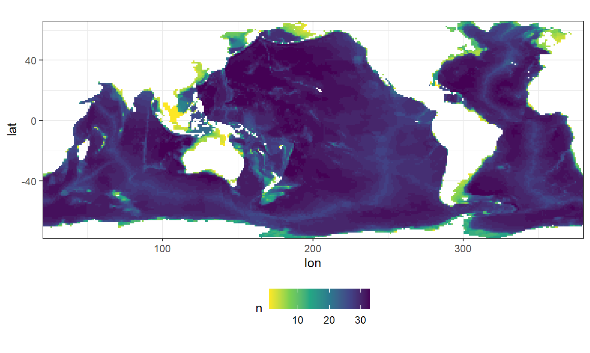
rm(GLODAP_n)2.1.2 WOA13 climatology
WOA13_gamma_n <- WOA13_gamma %>%
drop_na() %>%
group_by(lat, lon) %>%
summarise(n = n()) %>%
ungroup()
WOA13_gamma_n %>%
ggplot(aes(lon, lat, fill = n)) +
geom_raster() +
scale_fill_viridis_c(direction = -1) +
coord_quickmap(expand = 0) +
theme(legend.position = "bottom")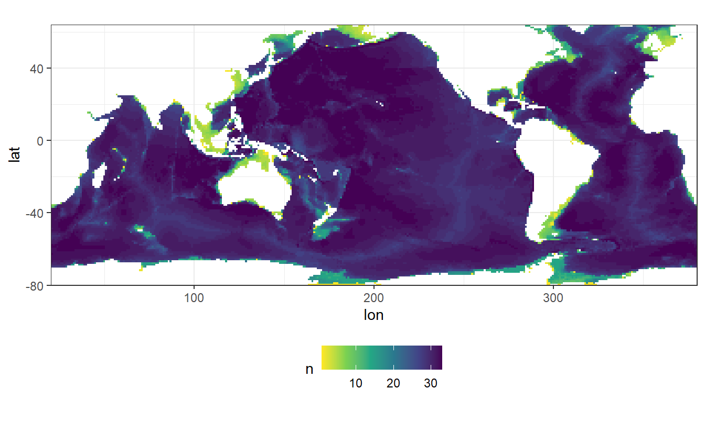
rm(WOA13_gamma_n)2.2 WOA13 + GLODAP
Predictor climatologies are merged. Only horizontal grid cells with at least one observation are kept. Rows with NA values are removed.
predictors <- full_join(GLODAP_predictors, WOA13_gamma)
rm(GLODAP_predictors, WOA13_gamma)
predictors <- predictors %>%
group_by(lat, lon) %>%
mutate(n_oxygen = sum(!is.na(oxygen)),
n_PO4 = sum(!is.na(PO4)),
n_silicate = sum(!is.na(silicate)),
n_salinity = sum(!is.na(salinity)),
n_temperature = sum(!is.na(temperature)),
n_gamma = sum(!is.na(gamma))) %>%
ungroup()
predictors <- predictors %>%
filter(n_oxygen > 0,
n_PO4 > 0,
n_silicate > 0,
n_salinity > 0,
n_temperature > 0,
n_gamma > 0) %>%
select(-c(n_oxygen,
n_PO4,
n_silicate,
n_salinity,
n_temperature,
n_gamma))
predictors <- predictors %>%
drop_na()2.2.1 Spatial boundaries
min_depth <- 150
min_bottomdepth <- 500
max_lat <- 65Only mapped variables were taken into consideration which fullfill the same criteria applied to observational data before MLR fitting:
- minimum depth: 150m
- minimum bottom depth: 500m
- maximum latitude: 65°N
predictors <- predictors %>%
filter(depth >= min_depth)
predictors <- predictors %>%
filter(lat <= max_lat)
predictors <- predictors %>%
group_by(lat, lon) %>%
mutate(bottomdepth = max(depth)) %>%
ungroup()
predictors <- predictors %>%
filter(bottomdepth >= min_bottomdepth) %>%
select(-bottomdepth)
rm(min_depth, max_lat, min_bottomdepth)2.2.2 Basin mask
Please note that some predictor variables are available outside the WOA18 basin mask, but will be removed for further analysis.
predictors <- inner_join(predictors, basinmask)
rm(basinmask)2.2.3 Maps
Three maps are generated to control succesful merging of data sets.
predictors %>%
ggplot(aes(lon, lat)) +
geom_bin2d(binwidth = c(1,1)) +
scale_fill_viridis_c(direction = -1) +
coord_quickmap(expand = 0) +
theme(legend.position = "bottom")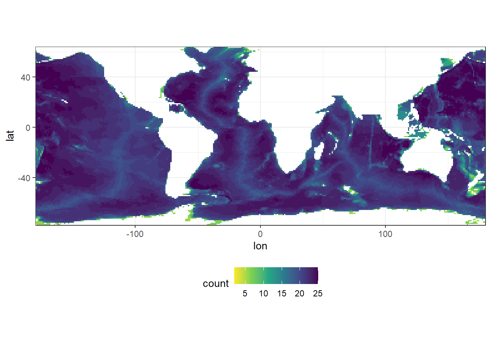
predictors %>%
filter(depth == 150) %>%
ggplot(aes(lon, lat, fill = PO4)) +
geom_raster() +
scale_fill_viridis_c() +
coord_quickmap(expand = 0) +
theme(legend.position = "bottom") +
labs(title = "150m values")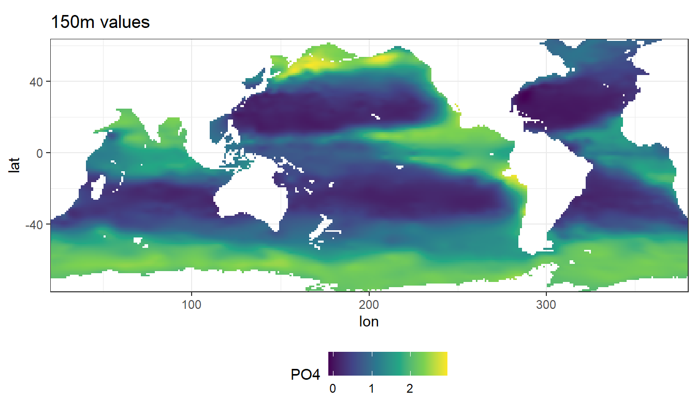
predictors %>%
filter(depth == 150) %>%
ggplot(aes(lon, lat, fill = gamma)) +
geom_raster() +
scale_fill_viridis_c() +
coord_quickmap(expand = 0) +
theme(legend.position = "bottom") +
labs(title = "150m values")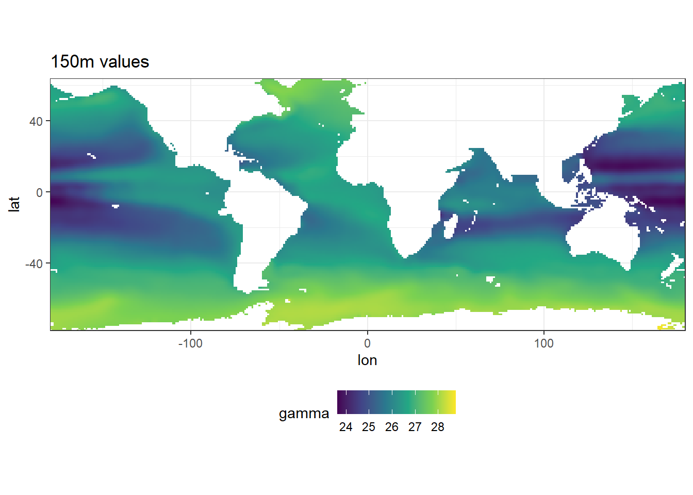
2.2.4 Predictor profiles
Likewise, predictor profiles for the North Atlantic (lat = 40.5, lon = -20.5) are plotted to control successful merging of the data sets.
N_Atl <- predictors %>%
filter(lat == 40.5, lon == -20.5)
N_Atl <- N_Atl %>%
pivot_longer(salinity:gamma, names_to = "parameter", values_to = "value")
N_Atl %>%
ggplot(aes(value, depth)) +
geom_path() +
geom_point() +
scale_y_reverse() +
facet_wrap(~parameter,
scales = "free_x",
ncol = 2)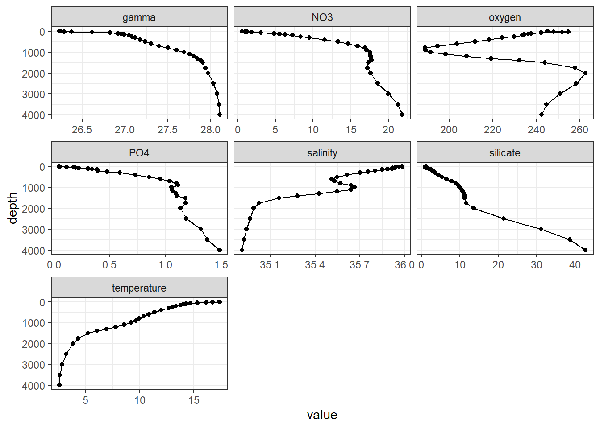
rm(N_Atl)2.3 WOA18 + GLODAP
WOA18 data are currently not used. Code chunks in this section are not executed.
predictors <- full_join(GLODAP_predictors, WOA18_predictors)
rm(GLODAP_predictors, WOA18_predictors)
predictors <- predictors %>%
group_by(lat, lon) %>%
mutate(n_NO3 = sum(!is.na(NO3)),
n_oxygen = sum(!is.na(oxygen)),
n_PO4 = sum(!is.na(PO4)),
n_silicate = sum(!is.na(silicate)),
n_salinity = sum(!is.na(salinity)),
n_temperature = sum(!is.na(temperature))) %>%
ungroup()
predictors <- predictors %>%
filter(n_NO3 > 1,
n_oxygen > 1,
n_PO4 > 1,
n_silicate > 1,
n_salinity > 1,
n_temperature > 1) %>%
select(-c(n_NO3 , n_oxygen , n_PO4 , n_silicate , n_salinity , n_temperature))
predictors %>%
ggplot(aes(lon, lat)) +
geom_bin2d(binwidth = c(1,1)) +
scale_fill_viridis_c(direction = -1) +
coord_quickmap(expand = 0) +
theme(legend.position = "bottom")
predictors %>%
filter(depth == 0) %>%
ggplot(aes(lon, lat, fill = PO4)) +
geom_raster() +
scale_fill_viridis_c() +
coord_quickmap(expand = 0) +
theme(legend.position = "bottom") +
labs(title = "Surface values")
predictors %>%
filter(depth == 0) %>%
ggplot(aes(lon, lat, fill = temperature)) +
geom_raster() +
scale_fill_viridis_c() +
coord_quickmap(expand = 0) +
theme(legend.position = "bottom") +
labs(title = "Surface values")predictors <- predictors %>%
group_by(lat, lon) %>%
arrange(depth) %>%
mutate(temperature = approxfun(depth, temperature, rule = 2)(depth),
salinity = approxfun(depth, salinity, rule = 2)(depth)) %>%
ungroup()
predictors <- predictors %>%
filter(depth %in% GLODAP_depths)3 Prepare predictor fields
3.1 PO4* calculation
Currently, the predictor PO4* is calculated according to Clement and Gruber (2018), ie based on oxygen rather than nitrate.
predictors <- predictors %>%
rename(phosphate = PO4) %>%
mutate(phosphate_star = phosphate + (oxygen / 170) - 1.95)3.2 AOU
3.2.1 Calculation
AOU was calculated as the difference between saturation concentration and observed concentration.
CAVEAT: Algorithms used to calculate oxgen saturation concentration are not yet identical in GLODAP data set (fitting) and predictor climatologies (mapping).
predictors <- predictors %>%
mutate(oxygen_sat = gas_satconc(S = salinity,
t = temperature,
P = 1.013253,
species = "O2"),
aou = oxygen_sat - oxygen) %>%
select(-oxygen_sat)3.2.2 Atlantic section
Atl_lon <- 335.5 - 360
predictors %>%
filter(lon == Atl_lon) %>%
ggplot(aes(lat, depth, z = aou)) +
geom_contour_filled() +
scale_fill_viridis_d(name = "AOU") +
guides(fill = guide_colorsteps(barheight = unit(7, "cm"))) +
scale_y_reverse() +
coord_cartesian(expand = 0)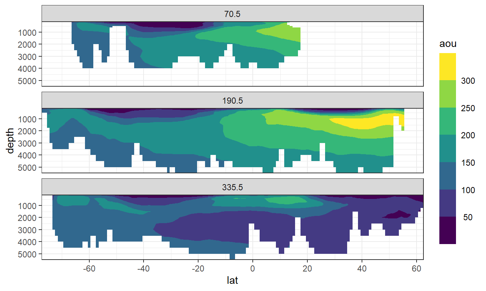
rm(Atl_lon)3.3 Isoneutral slabs
slabs_Atl <- c(
-Inf,
26.00,
26.50,
26.75,
27.00,
27.25,
27.50,
27.75,
27.85,
27.95,
28.05,
28.10,
28.15,
28.20,
Inf)
slabs_Ind_Pac <- c(
-Inf,
26.00,
26.50,
26.75,
27.00,
27.25,
27.50,
27.75,
27.85,
27.95,
28.05,
28.10,
Inf)The following boundaries for isoneutral slabs were defined:
- Atlantic: -, 26, 26.5, 26.75, 27, 27.25, 27.5, 27.75, 27.85, 27.95, 28.05, 28.1, 28.15, 28.2,
- Indo-Pacific: -, 26, 26.5, 26.75, 27, 27.25, 27.5, 27.75, 27.85, 27.95, 28.05, 28.1,
Continuous neutral density (gamma) values based on WOA13 are grouped into isoneutral slabs.
predictors_Atl <- predictors %>%
filter(basin == "Atlantic") %>%
mutate(gamma_slab = cut(gamma, slabs_Atl))
predictors_Ind_Pac <- predictors %>%
filter(basin == "Indo-Pacific") %>%
mutate(gamma_slab = cut(gamma, slabs_Ind_Pac))
predictors <- bind_rows(predictors_Atl, predictors_Ind_Pac)
rm(predictors_Atl, predictors_Ind_Pac, slabs_Atl, slabs_Ind_Pac)4 Prepare model coefficients
all_lm <- all_lm %>%
select(term, estimate, basin, era, gamma_slab, model)
all_lm <- all_lm %>%
mutate(estimate = if_else(is.na(estimate), 0, estimate))
all_lm_wide <- all_lm %>%
pivot_wider(names_from = era, values_from = estimate,
names_prefix = "coeff_")
all_lm_wide <- all_lm_wide %>%
mutate(JGOFS_GO = coeff_GO_SHIP - coeff_JGOFS_WOCE,
GO_new = coeff_new_era - coeff_GO_SHIP) %>%
select(-c(coeff_JGOFS_WOCE,
coeff_GO_SHIP,
coeff_new_era))
all_lm_long <- all_lm_wide %>%
pivot_longer(JGOFS_GO:GO_new, names_to = "eras", values_to = "delta_coeff")
all_lm_wide <- all_lm_long %>%
pivot_wider(values_from = delta_coeff,
names_from = term,
names_prefix = "delta_coeff_",
values_fill = 0)
rm(all_lm_long, all_lm)4.1 Merge MLRs + climatology
Cant <- full_join(predictors, all_lm_wide)
rm(predictors, all_lm_wide)5 Map Cant
5.1 Apply MLRs to predictor
Cant <- Cant %>%
mutate(Cant = `delta_coeff_(Intercept)` +
delta_coeff_aou * aou +
delta_coeff_oxygen * oxygen +
delta_coeff_phosphate * phosphate +
delta_coeff_phosphate_star * phosphate_star +
delta_coeff_silicate * silicate +
delta_coeff_salinity * salinity +
delta_coeff_temperature * temperature)5.2 Mean Cant fields
Mean and sd are calculated for Cant in each grid cell (XYZ), basin and era combination. Calculations are performed for all Cant values vs positive values only. This averaging step summarizes the information derived from ten best fitting MLRs.
Cant_model_average <- Cant %>%
mutate(Cant_pos = if_else(Cant < 0, 0, Cant)) %>%
group_by(lon, lat, depth, eras, basin) %>%
summarise(Cant_mean = mean(Cant),
Cant_sd = sd(Cant),
Cant_pos_mean = mean(Cant_pos),
Cant_pos_sd = sd(Cant_pos),
gamma_mean = mean(gamma)) %>%
ungroup()5.3 Mean Cant sections
For each basin and era combination, the zonal mean Cant is calculated, again for all vs positive only values. Likewise, sd is calculated for the averaging of the mean basin fields.
Cant_model_average_zonal <- Cant_model_average %>%
group_by(lat, depth, eras, basin) %>%
summarise(Cant_mean_sd = sd(Cant_mean, na.rm = TRUE),
Cant_mean = mean(Cant_mean, na.rm = TRUE),
Cant_sd_mean = mean(Cant_sd, na.rm = TRUE),
Cant_pos_mean_sd = sd(Cant_pos_mean, na.rm = TRUE),
Cant_pos_mean = mean(Cant_pos_mean, na.rm = TRUE),
Cant_pos_sd_mean = mean(Cant_pos_sd, na.rm = TRUE),
gamma_mean = mean(gamma_mean)) %>%
ungroup()6 Neutral density section
6.1 Mean values
The mean zonal distribution of neutral densities was calculated. CAVEAT: Binning here does not reflect the isoneutral density slabs used for MLR fitting.
Cant_model_average_zonal %>%
filter(depth <= 4500,
lat > -60) %>%
ggplot(aes(lat, depth, z = gamma_mean)) +
geom_contour_filled(binwidth = 0.25) +
scale_fill_viridis_d(name = "Gamma",
direction = -1) +
scale_y_reverse() +
coord_cartesian(expand = 0) +
guides(fill = guide_colorsteps(barheight = unit(10, "cm"))) +
facet_grid(basin~eras)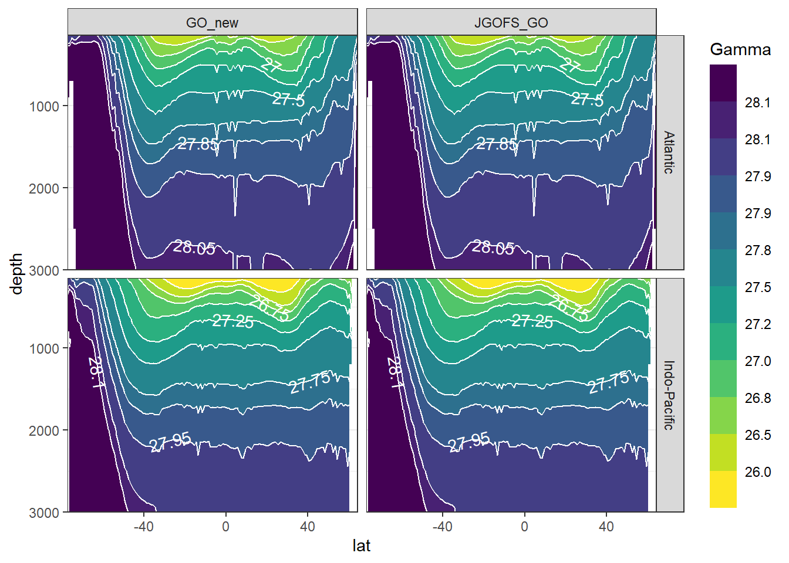
7 Cant sections
7.1 Mean values
Cant_model_average_zonal %>%
filter(depth <= 4500,
lat > -60) %>%
ggplot(aes(lat, depth, z = Cant_mean)) +
geom_contour_fill(breaks = MakeBreaks(5),
na.fill = TRUE) +
scale_fill_divergent(guide = "colorstrip",
breaks = MakeBreaks(5),
name = "Cant") +
scale_y_reverse() +
coord_cartesian(expand = 0) +
guides(fill = guide_colorsteps(barheight = unit(10, "cm"))) +
facet_grid(basin~eras)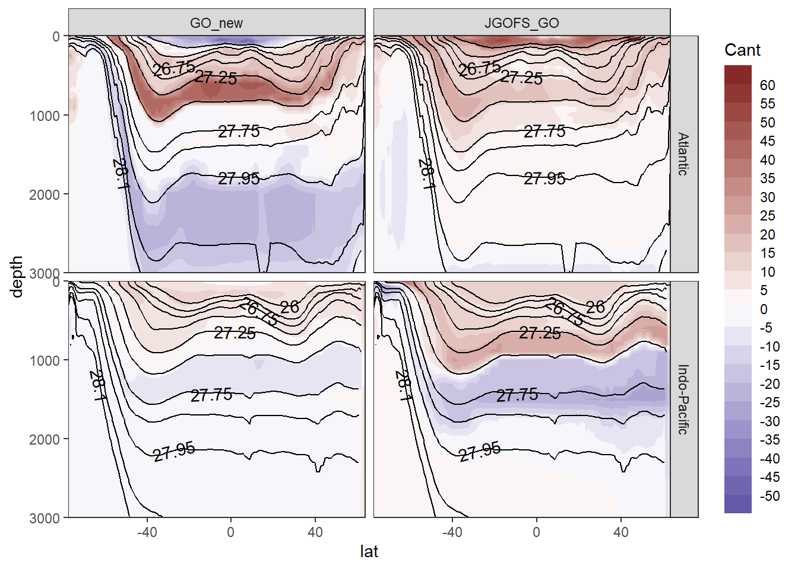
7.2 Mean zonal standard deviation across MLR models
Standard deviation across Cant from all MLR models was calculate for each grid cell (XYZ). The zonal mean of this standard deviation should reflect the uncertainty associated to the predictor selection within each slab and era.
Cant_model_average_zonal %>%
filter(depth <= 4500,
lat > -60) %>%
ggplot(aes(lat, depth, z = Cant_sd_mean)) +
geom_contour_filled() +
scale_fill_viridis_d(name = "Cant") +
scale_y_reverse() +
coord_cartesian(expand = 0) +
guides(fill = guide_colorsteps(barheight = unit(10, "cm"))) +
facet_grid(basin~eras)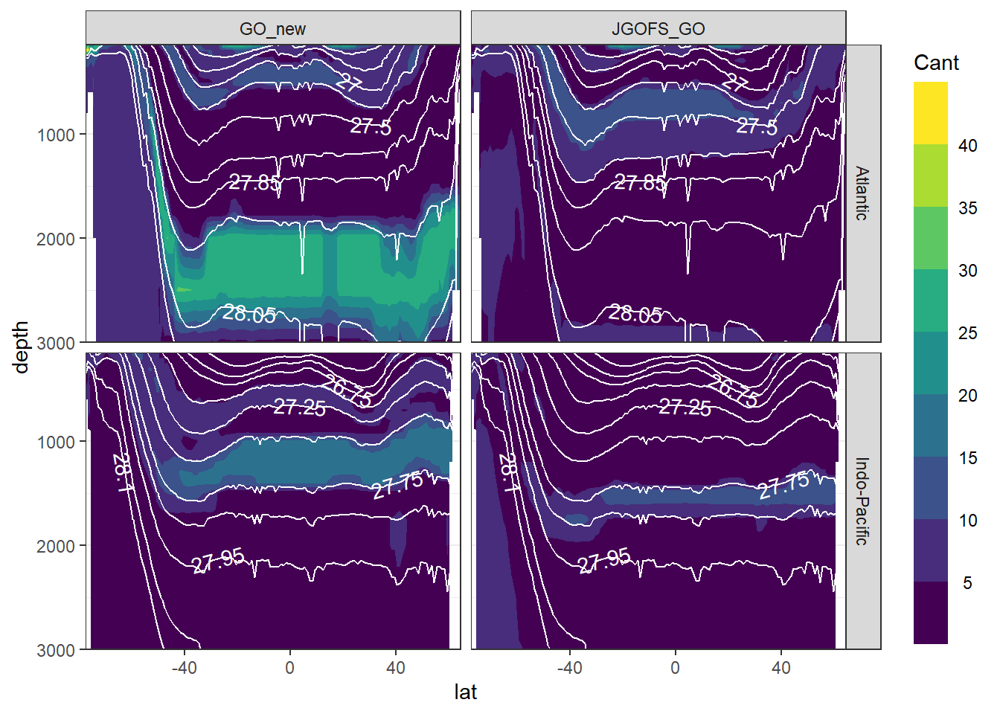
7.3 Zonal standard deviation of mean Cant estimates
Standard deviation of mean Cant values was calculate across all longitudes. This standard deviation should reflect the zonal variability of Cant within the basin and era.
Cant_model_average_zonal %>%
filter(depth <= 4500,
lat > -60) %>%
ggplot(aes(lat, depth, z = Cant_mean_sd)) +
geom_contour_filled() +
scale_fill_viridis_d(name = "Cant") +
scale_y_reverse() +
coord_cartesian(expand = 0) +
guides(fill = guide_colorsteps(barheight = unit(10, "cm"))) +
facet_grid(basin~eras)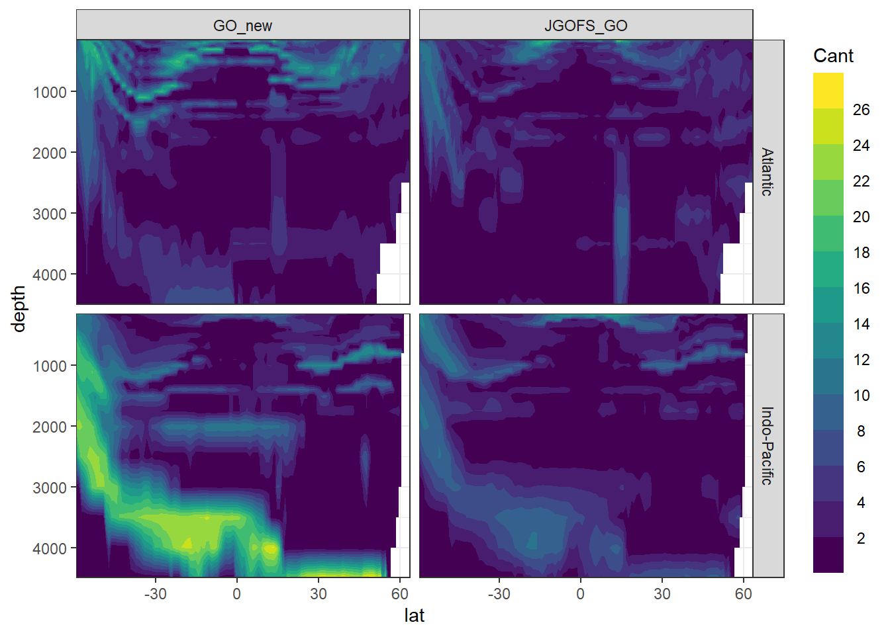
7.4 Mean positive values
Cant_model_average_zonal %>%
filter(depth <= 4500,
lat > -60) %>%
ggplot(aes(lat, depth, z = Cant_pos_mean)) +
geom_contour_filled() +
scale_fill_viridis_d(name = "Cant") +
scale_y_reverse() +
coord_cartesian(expand = 0) +
guides(fill = guide_colorsteps(barheight = unit(10, "cm"))) +
facet_grid(basin~eras)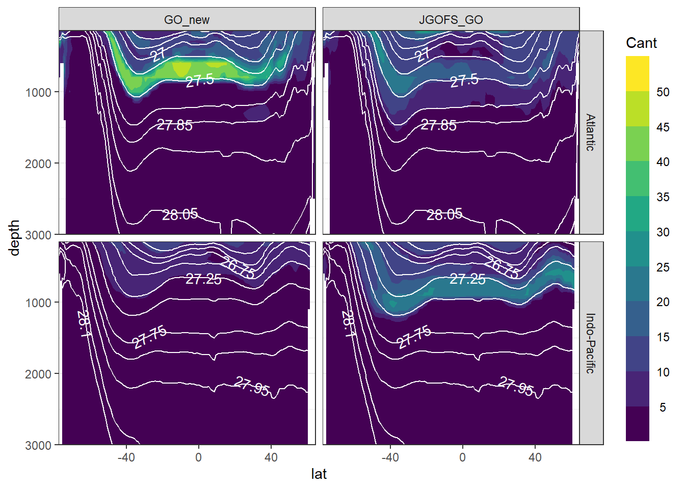
8 Cant maps
8.1 Depth layers
Cant concentration for selected depth levels at which mapping was performed.
mapWorld <- borders("world", colour = "gray60", fill = "gray60")
Cant_model_average %>%
filter(depth %in% c(150, 500, 1000, 3000)) %>%
ggplot(aes(lon, lat, fill = Cant_mean)) +
mapWorld +
geom_raster() +
scale_fill_divergent(guide = "colorstrip",
breaks = MakeBreaks(5),
name = "Cant") +
guides(fill = guide_colorsteps(barheight = unit(10, "cm"))) +
coord_quickmap(expand = 0) +
facet_grid(depth~eras)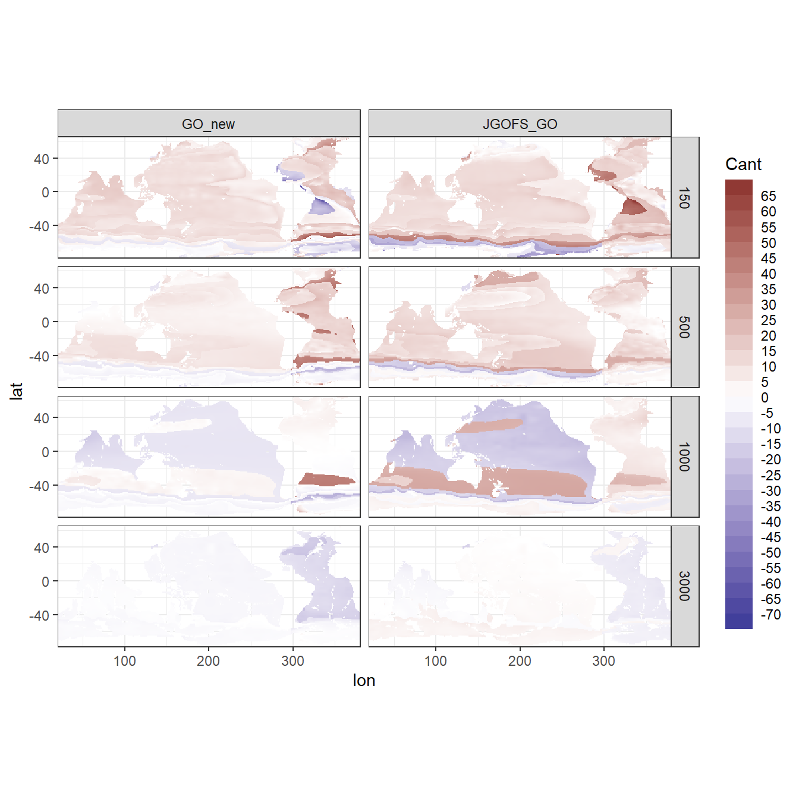
8.2 Inventory calculation
To calculate Cant column inventories, we:
- Multiple layer thickness with Cant concentration to get a layer inventory
- For each horizontal grid cell and era, sum Cant layer inventories from 150 - 3000 m
Step 2 is performed again for all Cant and positive Cant values only
depth_level_volume <- tibble(
depth = unique(Cant_model_average_zonal$depth))
depth_level_volume <- depth_level_volume %>%
mutate(layer_thickness_above = replace_na((depth - lag(depth)) / 2, 0),
layer_thickness_below = replace_na((lead(depth) - depth) / 2, 0),
layer_thickness = layer_thickness_above + layer_thickness_below) %>%
select(-c(layer_thickness_above,
layer_thickness_below))
Cant_model_average <- full_join(Cant_model_average, depth_level_volume)
rm(depth_level_volume)Cant_model_average <- Cant_model_average %>%
mutate(Cant_layer = Cant_mean * layer_thickness)
Cant_inventory <- Cant_model_average %>%
filter(depth <= 3000) %>%
mutate(Cant_pos_layer = if_else(Cant_layer < 0, 0, Cant_layer)) %>%
group_by(lon, lat, basin, eras) %>%
summarise(Cant_pos_inventory = sum(Cant_pos_layer, na.rm = TRUE) / 1000,
Cant_inventory = sum(Cant_layer, na.rm = TRUE) / 1000) %>%
ungroup()8.3 Inventories
8.3.1 All Cant estimates
Cant_inventory %>%
ggplot(aes(lon, lat, fill = Cant_inventory)) +
mapWorld +
geom_raster() +
scale_fill_divergent(guide = "colorstrip",
breaks = MakeBreaks(5),
name = "Cant") +
guides(fill = guide_colorsteps(barheight = unit(10, "cm"))) +
coord_quickmap(expand = 0) +
facet_wrap(~eras, ncol = 1)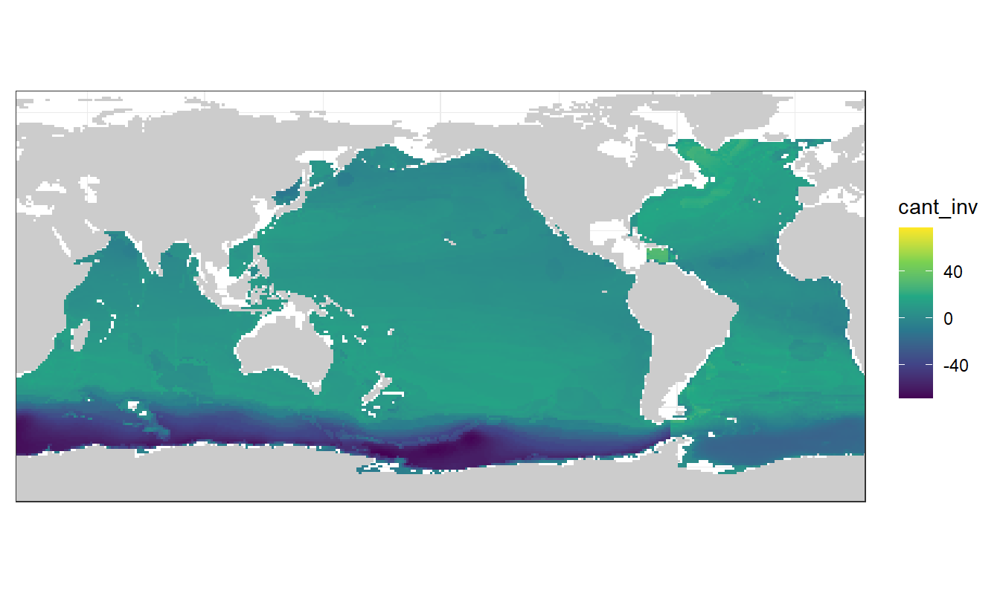
8.3.2 Positive Cant estimates
Cant_inventory %>%
ggplot(aes(lon, lat, fill = Cant_pos_inventory)) +
mapWorld +
geom_raster() +
scale_fill_viridis_c(name = "Cant") +
coord_quickmap(expand = 0) +
facet_wrap(~eras, ncol = 1)
9 Open tasks
- Calculate WOA18 neutral density and use WOA18 S, T, and gamma as predictors
- Switch to Clement’s basin mask or update WOA18 basin mask
- Check PO4* calculation
- Harmonize AOU calculation in fitting and mapping
- Plot Cant sections for individual MLR models
10 Open questions
11 Neutral density calculation
Not yet succesfully implemented
GLODAP <- read_csv(here::here("data/GLODAPv2_2020/_summarized_data_files",
"GLODAP_MLR_fitting_ready.csv"))
cruises_meridional <- c("1041")
GLODAP_cruise <- GLODAP %>%
filter(cruise %in% cruises_meridional)
GLODAP_cruise <- GLODAP_cruise %>%
mutate(gamma_calc = swRho(salinity = salinity,
temperature = temperature,
pressure = depth,
longitude = lon,
latitude = lat,
eos = "gsw"))
GLODAP_cruise <- GLODAP_cruise %>%
mutate(gamma_calc = gamma_calc - 1000,
delta_gamma = gamma - gamma_calc)
lat_section <-
GLODAP_cruise %>%
ggplot(aes(lat, depth)) +
scale_y_reverse() +
scale_color_viridis_c() +
theme(legend.position = "bottom")
lat_section +
geom_point(aes(col = gamma))
lat_section +
geom_point(aes(col = gamma_calc))
lat_section +
geom_point(aes(col = delta_gamma))11.1 WOA18
WOA18_predictors <- WOA18_predictors %>%
rename(LATITUDE = lat,
LONGITUDE = lon,
SALNTY = salinity,
THETA = temperature,
CTDPRS = depth) %>%
mutate(CTDPRS = 1 + CTDPRS/10)
source_python(here::here("analysis/python_scripts",
"Gamma_GLODAP_python.py"))
WOA18_predictors <- calculate_gamma(WOA18_predictors)11.1.1 Atlantic section
Atl_lon <- 335.5 - 360
WOA18_predictors %>%
filter(LONGITUDE == Atl_lon) %>%
ggplot(aes(LATITUDE, CTDPRS, z = GAMMA)) +
geom_contour_filled() +
scale_fill_viridis_d(name = "GAMMA") +
guides(fill = guide_colorsteps(barheight = unit(7, "cm"))) +
scale_y_reverse() +
coord_cartesian(expand = 0)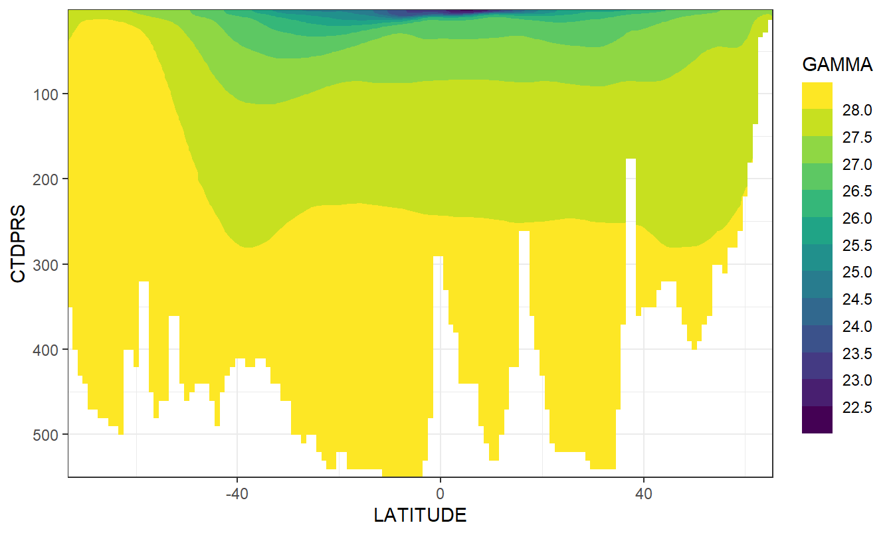
rm(Atl_lon)
sessionInfo()R version 4.0.2 (2020-06-22)
Platform: x86_64-w64-mingw32/x64 (64-bit)
Running under: Windows 10 x64 (build 18363)
Matrix products: default
locale:
[1] LC_COLLATE=English_Germany.1252 LC_CTYPE=English_Germany.1252
[3] LC_MONETARY=English_Germany.1252 LC_NUMERIC=C
[5] LC_TIME=English_Germany.1252
attached base packages:
[1] stats graphics grDevices utils datasets methods base
other attached packages:
[1] reticulate_1.16 metR_0.7.0 marelac_2.1.10 shape_1.4.4
[5] oce_1.2-0 gsw_1.0-5 testthat_2.3.2 lubridate_1.7.9
[9] forcats_0.5.0 stringr_1.4.0 dplyr_1.0.0 purrr_0.3.4
[13] readr_1.3.1 tidyr_1.1.0 tibble_3.0.3 ggplot2_3.3.2
[17] tidyverse_1.3.0 workflowr_1.6.2
loaded via a namespace (and not attached):
[1] httr_1.4.2 maps_3.3.0 jsonlite_1.7.0 viridisLite_0.3.0
[5] here_0.1 modelr_0.1.8 assertthat_0.2.1 sp_1.4-2
[9] blob_1.2.1 cellranger_1.1.0 yaml_2.2.1 pillar_1.4.6
[13] backports_1.1.8 lattice_0.20-41 glue_1.4.1 digest_0.6.25
[17] promises_1.1.1 checkmate_2.0.0 rvest_0.3.6 colorspace_1.4-1
[21] plyr_1.8.6 htmltools_0.5.0 httpuv_1.5.4 Matrix_1.2-18
[25] pkgconfig_2.0.3 broom_0.7.0 seacarb_3.2.13 haven_2.3.1
[29] scales_1.1.1 whisker_0.4 later_1.1.0.1 git2r_0.27.1
[33] generics_0.0.2 farver_2.0.3 ellipsis_0.3.1 withr_2.2.0
[37] cli_2.0.2 magrittr_1.5 crayon_1.3.4 readxl_1.3.1
[41] memoise_1.1.0 evaluate_0.14 fs_1.4.2 fansi_0.4.1
[45] xml2_1.3.2 tools_4.0.2 data.table_1.13.0 hms_0.5.3
[49] lifecycle_0.2.0 munsell_0.5.0 reprex_0.3.0 isoband_0.2.2
[53] compiler_4.0.2 rlang_0.4.7 grid_4.0.2 rstudioapi_0.11
[57] rappdirs_0.3.1 labeling_0.3 rmarkdown_2.3 gtable_0.3.0
[61] DBI_1.1.0 R6_2.4.1 knitr_1.29 rprojroot_1.3-2
[65] stringi_1.4.6 Rcpp_1.0.5 vctrs_0.3.2 dbplyr_1.4.4
[69] tidyselect_1.1.0 xfun_0.16